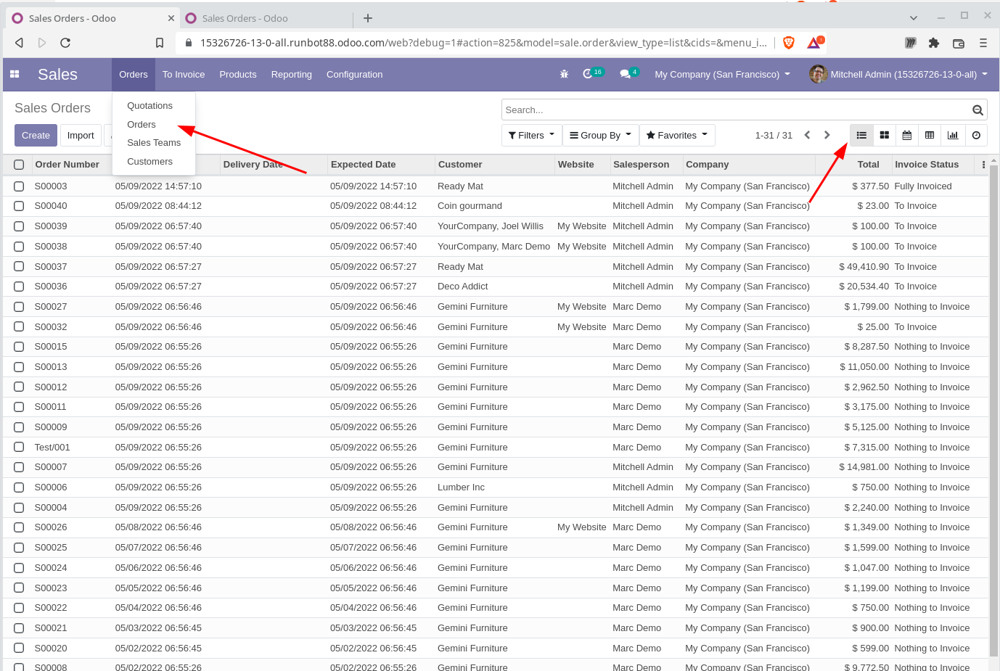

Configurações Técnicas¶
O modo desenvolvedor¶
Conecte em seu banco de dados (Não é necessário se conectar como admim, esta função esta disponível para todos os usuários, entretanto o admin tem mais ferramentas)
Clique no menu principal e acesse o módulo de Configurações
No lado inferior direito clique em Activate developer mode
{kind=link}
Repare que a tag ?debug=1 é adicionada na URL!
Attention
Também é possível ativar o modo desenvolvedor alterando a URL: Antes do #, insira: ?debug.
https://kmee.com.br/web#action=1494&active_id=mailbox_inbox&menu_id=1160
**Altere para:**
https://kmee.com.br/web?debug#action=1494&active_id=mailbox_inbox&menu_id=1160
Warning
Você pode fazer isso diretamente na URL em qualquer link que estiver acessando.
Quando ativo¶
Acesso a configurações técnicas;
Você recebe dicas ao colocar o cursor em cima de um campo: nome técnico, tipo e etc;
Um menu drop-down é exibido no topo com informações técnicas, sobre o modelo exibido, as visões, ações, workflows, filtros e etc.
Debug with Assets¶
Visando carregar o Odoo mais rápido, os “assets” JavaScript e CSS são minificados o que dificulta o debug do cliente web. Para desativar esta compactação existe o modo debug especial, com assets:
Clique no menu Settings
No lado inferior direito clique em Activate developer mode with assets
Warning
Também é possível ativar o modo desenvolvedor alterando a URL:
Antes do # sign, insira: ?debug=assets.
https://kmee.com.br/web#menu_id=102&action=94
**Altere para**
https://kmee.com.br/web?debug=assets#…
Configurações Técnicas¶
O menu configurações técnicas só fica acessível através do modo desenvolvedor e pode acessado:
Menu principal > Configurações > Técnico.
Neste menu ficam boa parte das configurações do sistema, sendo que muitas delas são criadas automaticamente quando instalamos um módulo. Uma boa forma de entender como esses dados funcionam é instalando um módulo e entendendo o que aparece nos registros.
OBS: Como a parte de emails é muito extensa e complexa, deixamos para um módulo dedicado.
Ações¶
As ações representam todas ações que podem ser chamadas pelo usuário:
ir.actions.actions: Ações¶
Ações disponíveis nos menus Ação dos modelos;
Exemplo: A ação de alterar uma senha do usuário;
ir.actions.report: Relatórios¶
Ações que chamam relatórios;
Exemplo: Imprimir o código de barras do cracha do ponto de vendas no cadastro de usuários;
{kind=link}
{kind=link}
Name: Nome do botão;
Report Type: Tipo de relatório: PDF, HTML, Excel e etc;
Formato do Papel;
Model name: Modelo base do relatório;
Template name: Nome técnico do template de relatório;
Printed Report Name: Nome do arquivo a ser salvo;
OBS: podemos usar notação mako: “((object.name or ’‘).replace(’/‘,’‘)+’.pdf’)”
Security: Grupo de usuários que poderão gerar o relatório;
Advanced:
Reload from Attachment: Não emitir o relatório novamente e recarregar o relatório do anexo;
Save as Attachment: Quando o relatório for gerado novamente, colocar um prefixo no nome do arquivo.
{kind=link}
{kind=link}
ir.actions.act_window: Ações de Janela¶
São as ações que os botões chamam e elas determinam o comportamento padrão da janela chamada:
{kind=link}
{kind=link}
Qual modelo de negócio será exibido;
Quais tipos de visão serão exibidas;
Qual o filtro padrão;
Qual a busca padrão;
Os grupos que terão acesso a esta ação;
etc.
ir.actions.server: Ações no Servidor¶
As ações de servidor são rotinas que podem ser chamadas através do menu de ação e também através de ações agendadas. Sua principal funcionalidade é ajudar o usuário a automatizar ações repetitivas, ou ações complexas tornando-as simples.
As ações podem ser de vários tipos:
Executam um código python;
Criam um novo registro, por exemplo a partir de um chamado no módulo de Helpdesk, desejamos criar uma tarefa de projeto;
Atualizam dados de um registro;
Executar múltiplas ações de servidor em sequência;
Enviar um e-mail;
Adicionar seguidores a um documento;
Criar uma próxima atividade;
Enviar uma mensagem de texto;
{kind=link}
{kind=link}
ir.actions.todo**: Assistentes de Configuração**¶
Armazenam o estado atual de um assistente de configuração. Você pode forçar o acionamento de um assistente já configurado novamente.
ir.default: Padrões definidos pelo usuário¶
Salvam dados de padrões definidos no modo desenvolvedor.
Interface de usuário;¶
Menus
Visões;
Visões customizadas;
Filtros definidos pelo usuário;
Tours;
Estrutura de dados¶
Precisão decimal;
Modelos;
Campos;
Campos de seleção;
Contraints de modelos no banco de dados
Relações many to many;
Anexos;
Logging do servidor;
Automação¶
Ações automatizadas¶
São ações que são executadas automaticamente quando:
Na criação de um registro;
Ao alterar um registro;
Ao criar e alterar;
Ao apagar;
etc.
Elas podem ter um filtro que restrinja sua execução.
{% hint style=“success” %} Exemplo: Toda vez que um novo produto for criado avisar o setor fiscal da empresa por e-mail, para que o mesmo verifique se a configuração esta correta. {% endhint %}
Ações Agendadas¶
As ações agendadas são ações que o usuário pode agendar para ser executada em um determinado horário, repetidamente ou não.
Warning
Exemplos:
Criar novos pedidos de compra em rascunho, com base nas variações de estoque de ultimo dia;
Aprovar pedidos automaticamente provenientes de determinado canal;
Relatórios¶
Formatos de papel;
Relatórios: Um segundo menu de ir.actions.report onde é possível editar o conteúdo dos relatórios;
Sequencias e identificadores¶
{kind=link}
{kind=link}
Parâmetros¶
Em parâmetros encontramos parâmetros de configuração que mudam comportamento de módulos, como os arquivos .INI / CFG de sistemas desktop.
Alguns exemplos:
Permitir a autenticação externa de usuários;
Informações da licença do enterprise;
Data da criação do banco de dados;
UIID do banco de dados;
Configurações de catchall do email;
URL base do sistema;
etc.
Warning
O módulo de relatórios as vezes não renderiza corretamente o estilo e o header, pois verifica os parametros: report.url e o fallback web.base.url. Podemos então deixar o web.base.url como esta e setar um novo parâmetro report.url como http://0.0.0.0:8069.
Segurança¶
Regras de registros:¶
As regras de registros filtram os dados do sistema conforme a permissão do usuário, por exemplo um vendedor só pode acessar os seus pedidos de vendas:
{kind=link}
Importante entender que as regras escondem registros que o usuário não tem permissão de acessar, conforme a definição da regra e a mesma se aplica ao grupo em que esta relacionada.
Warning
Caso nenhum grupo for definido ela se torna uma regra global e portanto será aplicada para todos os usuários.
Regras de acesso¶
Depois que a regra de registro é aplicada, uma segunda validação é aplicada, composta pelas regras de acesso.
Warning
Por exemplo: Um vendedor pode criar e editar um pedido de vendas. Mas só pode ler o cadastro de produtos.
Recursos¶
Recursos associam registros do sistema com a sua disponibilidade no tempo, por exemplo:
Um funcionário está de férias quando?
Uma maquina esta ocupada ou disponível;
Um recurso pode atuar em determinado projeto?
Determinado dia é feriado?
etc.